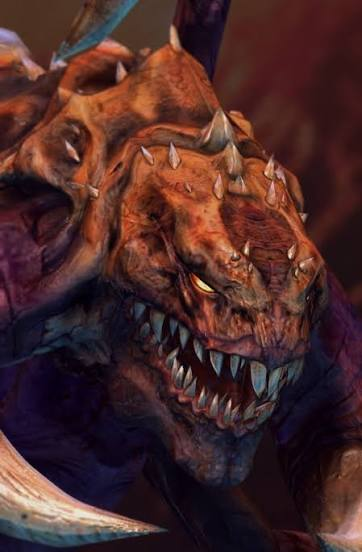
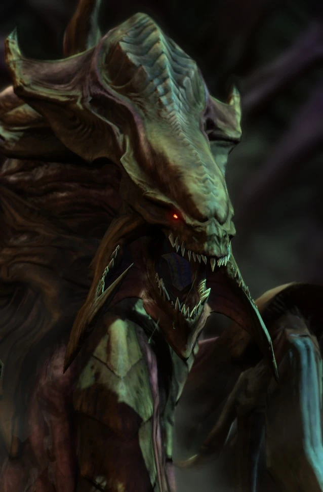
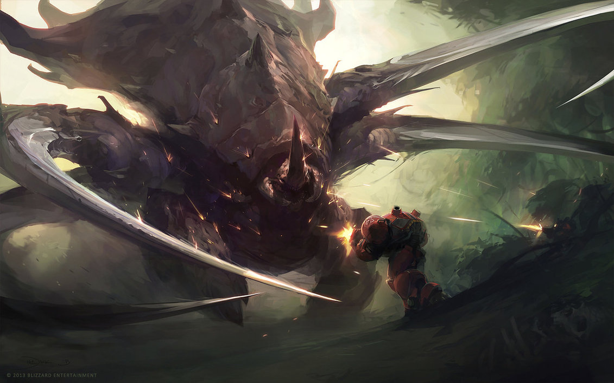

Зерги — это безжалостная инопланетная раса насекомоподобных существ во вселенной StarCraft, представляющая собой единый Рой с коллективным разумом. Созданные древней расой зел-нага на планете Зерус, они развивались по пути «чистоты сущности», полностью отказавшись от привычных технологий в пользу стремительных биологических мутаций и ассимиляции других видов. Управляемые единой волей — сначала Сверхразумом, а затем Королевой Клинков — зерги сокрушают своих врагов колоссальным численным превосходством, превращая целые планеты в покрытые живой биомассой ульи.
Основные юниты

Зерглинг

Гидралиск

Ультралиск